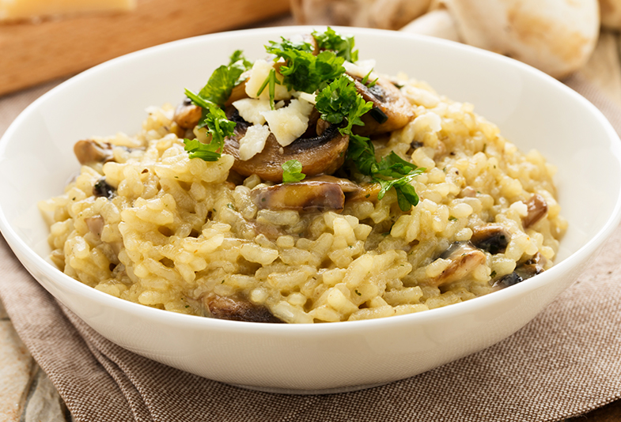

La receta de Risotto
En esta receta les explicamos como hacer risotto de manera clásica, pero con la técnica pueden agregarle lo que quieran y hacer un risotto con sus ingredientes favoritos ya sean verduras o panceta por ejemplo. Lo más importante y el secreto es tener un buen caldo, así que no escatimen en cantidad ni sabor. Es lo que le va a dar el gusto especial al arroz. Hablando del arroz, es clave que usemos un arroz capaz de absorber líquido y darnos almidón para la cremosidad. Entonces tenemos que usar un arroz redondo, muy rico en almidón, como el carnaroli. Si no tienen, pueden conseguir doble carolina que también queda copado. Jamás usen un arroz de los que nunca se pasan. Van a cocinar cualquier cosa menos risotto ya que nunca lograrán espesar su consistencia húmeda y cremosa, se los aseguro!
